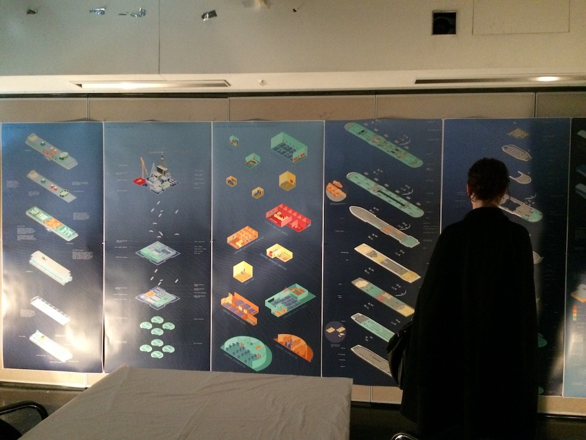

Curtin University, Monash University, Melbourne University, University of New South Wales, University of Technology Sydney.
Since 2007 I’ve tutored a range of core subjects including design studios, building technology and construction, architecture and culture, and visual communications.
Design studios have included:
- Adaptive reuse of the historical Coal Loader in Waverton on Sydney Harbour as an experimental art foundation.
- Architecture as Double Secret Agent, addressing refugee migration in Europe through the design of border crossings with a secret agenda.
- Housing typologies.
- Testing ‘technics’, ‘poetics’ and ‘civic narrative’ as schools of architectural thought.
